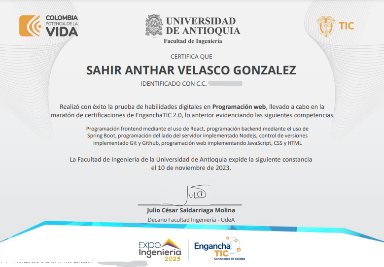
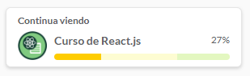
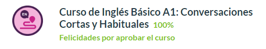

Bienvenido, mi nombre es SAHIR VELASCO
Así empecé este camino.
Inicie a estudiar programación de software con la Universidad Industrial de Santander en unos diplomados que ofreció el programa MisionTic2022 del Ministerio de las TIC (Colombia) en el cual me enseñaron fundamentos de varios lenguajes de programación como python, java, javascript, al principio no entendía mucho y era frustrante, pero de cierta manera siempre me ha gustado la tecnología Y no era momento para negarme a aprender algo que tanto me gusta.

En esta época ya tenía un conocimiento básico, pero este me permitió con algo más de entendimiento sobre el tema querer desarrollar aun más mis habilidades, por ello empecé a estudiar en la plataforma de Platzi, la cual me ha servido mucho, ya que sus cursos iban enfocados a lo que yo quería lograr para ser full stack web developer, con ayuda de sus cursos cree el backend de mis primeras APIs.
⇊ Aquí te dejo 2 repositorios públicos de gitlab con 2 APIs hechas con lo que he aprendido. ⇊
Gestor de VideosMi oficina de correos
En la actualidad, me encuentro mejorando mis habilidades con el ingles y estoy enfocado en aprender React para poder crear paginas web que se vean agradables a la vista y 100% funcionales.
  Si mi perfil te llama la atencion no dudes en contactarme, muchas gracias !
Correo: Sahirvl@icloud.com
LinkedIn: www.linkedin.com/in/sahir-velasco-110099256